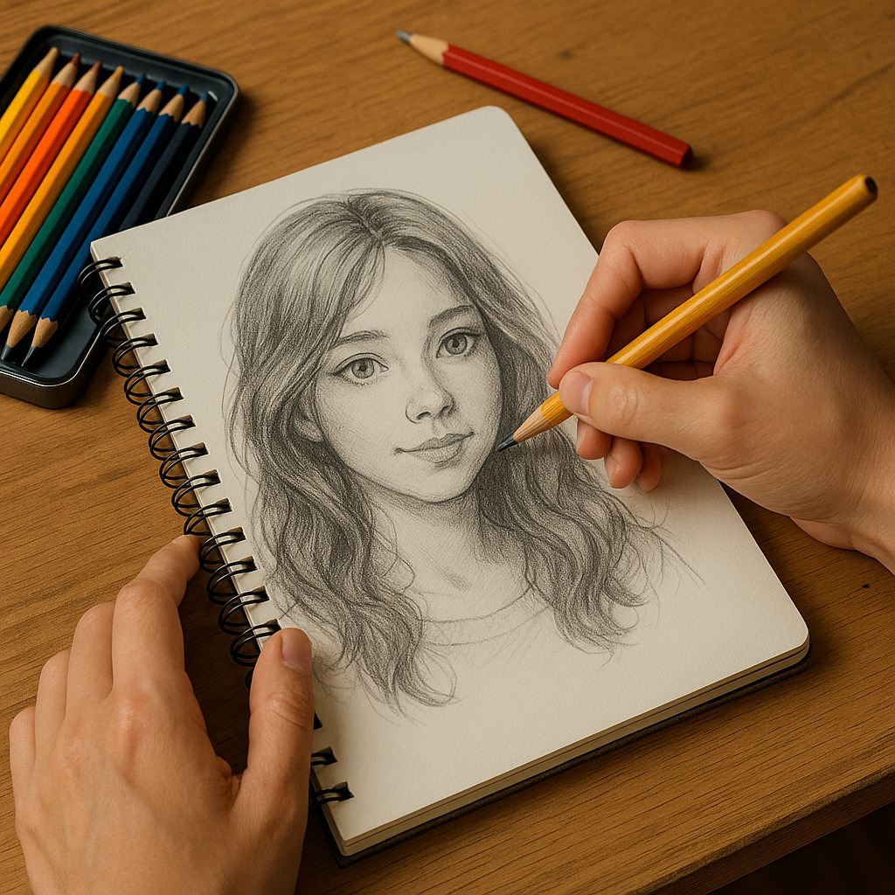
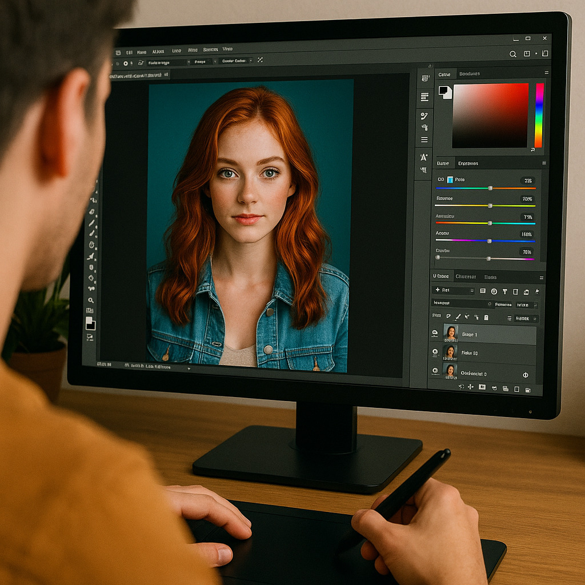
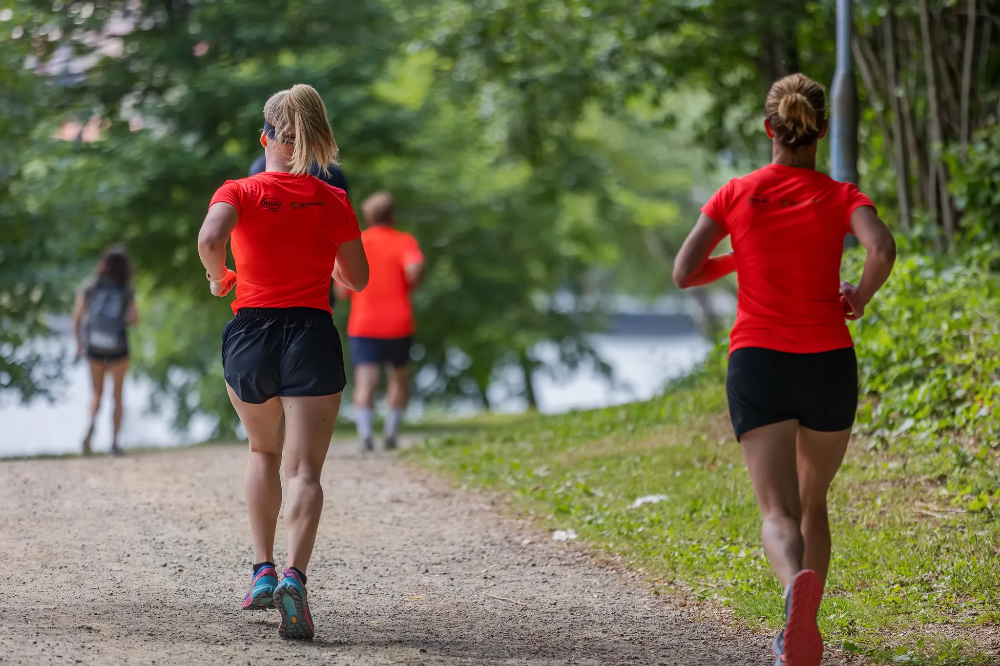

Zovem se Neva i jedne od stvari koje volim su kreativno izražavanje kroz crtanje i uređivanje slika u raznim programima. Posebno me privlače vizualne umjetnosti i digitalni alati koji mi omogućuju da spojim maštu i tehnologiju. Osim toga, tračak sreće pronalazim u igranju videoigara koje me opuštaju i potiču na razmišljanje, a trčanje mi pomaže da ostanem aktivna i očistim misli što mi je ujedno i najdraže.
Kroz crtanje mogu izraziti maštu i emocije na papiru. Volim skicirati likove i prirodu.
Igranje s bojama i efektima u programima za obradu fotografija mi razvija maštu!
Videoigre su moj nesvakodnevni kutak zabave i napetosti.
Trčanje mi pomaže da ostanem aktivna i da razbistrim misli uz najdražu glazbu.
Video koji me uvijek nasmije: link